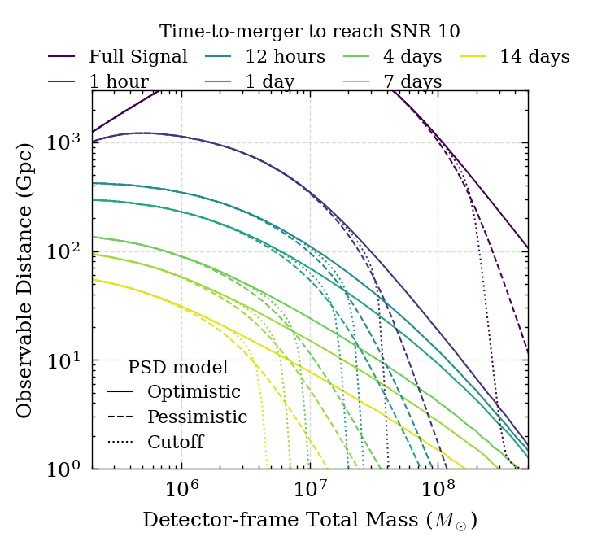

Sensitive time-distance figure plotting#
Here we show how to reproduce the plots 2a and 2b in the paper.
As the sensitive distance calculation can take a while, we load in datasets here which were pre-made. So if you want to add an extra time line, or a different PSD model, you would need to rerun the sensitive_time_distance.py script with different inputs.
Imports#
from matplotlib import pyplot as plt
import h5py
import numpy as np
from matplotlib.colors import LogNorm
from pycbc.cosmology import redshift
%matplotlib inline
/home/gareth/miniconda3/envs/env_lisa_ew/lib/python3.10/site-packages/pycbc/types/array.py:36: UserWarning: Wswiglal-redir-stdio:
SWIGLAL standard output/error redirection is enabled in IPython.
This may lead to performance penalties. To disable locally, use:
with lal.no_swig_redirect_standard_output_error():
...
To disable globally, use:
lal.swig_redirect_standard_output_error(False)
Note however that this will likely lead to error messages from
LAL functions being either misdirected or lost when called from
Jupyter notebooks.
To suppress this warning, use:
import warnings
warnings.filterwarnings("ignore", "Wswiglal-redir-stdio")
import lal
import lal as _lal
# Here we set a flag whether we want source-frame masses or
# not (detector-frame). This determines whether we get
# Fig 2a (False) or 2b (True)
source_frame_masses = False
# Set up max/min time/distance/mass for use
# in plotting / normalizing
max_mass = 0
min_mass = np.inf
max_time = 0
min_time = np.inf
max_dist = 0
min_dist = np.inf
Set up required dictionaries of inputs#
# Set up dictionary of input files
# note that these are outputs to the sensitive_time_distance.py script
# and as such may be in a different location if you run that yourself
input_files = {
'Optimistic': 'sensitive_time_distance_optimistic.hdf',
'Pessimistic': 'sensitive_time_distance_pessimistic.hdf',
'Cutoff': 'sensitive_time_distance_cutoff.hdf',
}
linestyles = {
'Optimistic': '-',
'Pessimistic': '--',
'Cutoff': ':',
}
Extract information from the files#
# Mass in Msol
masses = {}
# Time-before-merger to reach SNR 10 (days)
# (or whatever SNR has been defined in the sensitive_distance.py runs)
times = {}
# Distance to the source in Gpc
dists = {}
for input_type, input_filename in input_files.items():
with h5py.File(input_filename, 'r') as input_file:
ms = input_file['mass'][:]
ts = input_file['time'][:] / 86400 # This was defined as seconds in the input files
ds = input_file['distance'][:]
mass_range = input_file.attrs['mass_range']
# The input mass range will have been saved in the attributes
# of the file, but it could differ between runs. Use the max/min
# over all cases
max_mass = max(mass_range[1], max_mass)
min_mass = max(mass_range[0], min_mass)
max_time = max(max_time, ts.max())
min_time = max(min_time, ts.min())
# distances could be nan if the mass/time combination is not valid
# Set this to something arbitrarily small to prevent errors
ds[np.isnan(ds)] = 1e-6
if source_frame_masses:
# If you want to plot source-frame mass (Fig 2b), change this to True
ms /= (1 + redshift(ds * 1000))
# In case the output files are not ordered correctly, then sort them by
# time and then mass:
tm = np.array(
list(zip(ts, ms)),
dtype=[('time', float), ('mass', float)]
)
tm_sort = np.argsort(tm, order=['time','mass'])
masses[input_type] = ms[tm_sort]
times[input_type] = ts[tm_sort]
dists[input_type] = ds[tm_sort]
# Set up the color ranges being used for different times
# If time = 0 (i.e. SNR at merger) is being used, then the
# color map will break
vmin = min([min(t) for t in times.values()]) # Find the minimum
if vmin == 0:
vmin = min([np.sort(np.unique(t))[1] / 2 for t in times.values()])
vmax = max([max(t) for t in times.values()])
logvrange = np.log(vmax) - np.log(vmin)
vmin = np.exp(np.log(vmin) - 0.05 * logvrange)
vmax = np.exp(np.log(vmax) + 0.05 * logvrange)
norm = LogNorm(vmin=vmin, vmax=vmax)
# Work out the total number of different times / lines to be plotted
unq_times = np.unique(ts)
Make the plot#
with plt.style.context("../paper.mplstyle"):
line_cmap=plt.get_cmap(None)
# Make the figure - 1.5 times the normal height so we can see detail
width = plt.rcParams["figure.figsize"][0]
height = plt.rcParams["figure.figsize"][1] * 1.5
fig, ax = plt.subplots(
1, figsize=(width, height),
)
# Plot sensitivity lines for each of the PSDs
for inp_type, linestyle in linestyles.items():
# Plot each time of interest
for t in unq_times:
if t == 0:
# This is a special case due to the color map issue
# mentioned above
continue
lgc = times[inp_type] == t
ax.plot(
masses[inp_type][lgc] * 2,
dists[inp_type][lgc],
color=line_cmap(norm(t)),
linestyle=linestyle,
)
lgc0 = times[inp_type] == 0
# Also add the time=0 line
ax.plot(
masses[inp_type][lgc0] * 2,
dists[inp_type][lgc0],
color=line_cmap(0),
linestyle=linestyle
)
# Make some lines to be added to the legend showing the different PSDs
for inp_type, linestyle in linestyles.items():
ax.plot(
[], [],
color='k',
linestyle=linestyle,
label=inp_type.title()
)
leg1 = ax.legend(loc='lower left', title='PSD model')
# Make the legend showing time colors. Translate time (days)
# into words nicely.
time_lines = []
time_labels = []
for t in unq_times:
if t == 0:
time_lines.append(ax.plot([],[],color=line_cmap(0))[0])
time_labels.append("Full Signal")
else:
time_lines.append(ax.plot([],[],color=line_cmap(norm(t)))[0])
if t > 1:
time_labels.append(f'{t:.0f} days')
elif t == 1:
time_labels.append('1 day')
elif t == 1 / 24:
time_labels.append('1 hour')
else:
time_labels.append(f'{t * 24:.0f} hours')
ax.legend(
time_lines,
time_labels,
loc='upper center',
title='Time-to-merger to reach SNR 10',
bbox_to_anchor=(0.5, 1.22),
ncol=4
)
ax.add_artist(leg1)
# Labels for axes:
if source_frame_masses:
label = 'Source-frame Total Mass ($M_\odot$)'
else:
label = 'Detector-frame Total Mass ($M_\odot$)'
ax.set_xlabel(label)
ax.set_ylabel('Observable Distance (Gpc)')
# plotting tweaks
ax.loglog()
ax.set_xlim([2e5, 5e8])
ax.set_ylim([1, 3e3])
ax.grid(zorder=-100) # Grid _behind_ data
